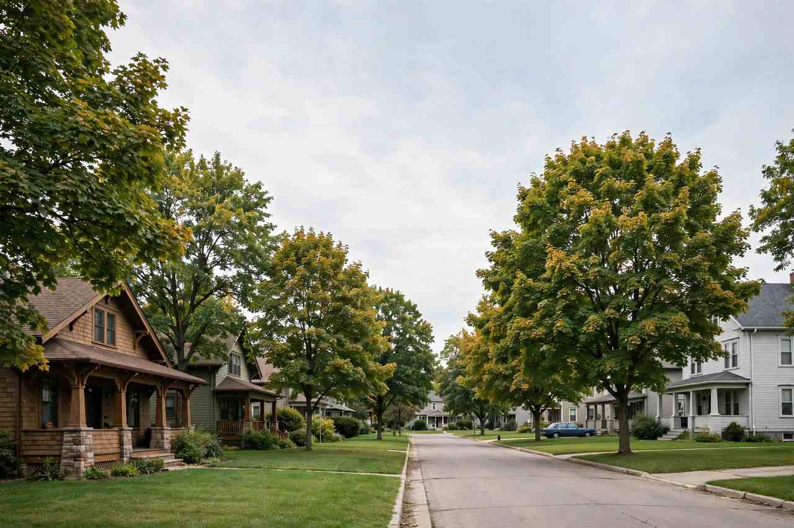

Rodent Control · Nora Springs, IA
Fast Rodent Control in Nora Springs, IA
Rats in the attic or mice in the kitchen in Nora Springs? Murvo provides same-day rodent control with local crews who inspect first, remove the animals already inside, and seal the entry points they used. Every job is quoted flat-rate in writing before work begins and backed by a written guarantee, covering homes and businesses across Floyd County. From Rockford, Plymouth, Mason City to every corner of Floyd County, 1 ZIP codes are covered by local Murvo crews.
24/7Availability
1ZIP codes covered
Same-dayResponse
Licensed · Upfront options · Written guarantees · Fully insured
Nora Springs at a glance
Local Rodent Control for Nora Springs, IA.
Floyd County
Countynorthern Iowa
RegionWaterloo · 56 mi
Nearest metro112 miles north of Des Moines
From Des Moines1
ZIP codes covered Service by service in Nora Springs
Rodent Control Services Available in Nora Springs
Rodent-only specialists serving Nora Springs and Floyd County. Every service below is explained in local terms - the species involved, the entry points that matter in vintage duplexes and stone homes, brick bungalows, older single-family homes, and farm and rural properties, and the seasonal timing that decides whether a fix lasts.
- 01Rodent Control↗
- 02Rodent Inspection↗
- 03Rodent Removal↗
- 04Rodent Exclusion↗
- 05Rodent Proofing↗
- 06Rat Control↗
- 07Mice Control↗
- 08Mouse Removal↗
- 09Rat Removal↗
- 10Rodent Trapping↗
- 11Rodent Baiting↗
- 12Rodenticide Application↗
- 13Attic Rodent Removal↗
- 14Crawl Space Rodent Removal↗
- 15Wall Rodent Removal↗
- 16Kitchen Rodent Control↗
- 17Garage Rodent Control↗
- 18Commercial Rodent Control↗
- 19Residential Rodent Control↗
- 20Emergency Rodent Removal↗
- 21Same-Day Rodent Control↗
- 22Rodent Damage Repair↗
- 23Rodent Waste Cleanup↗
- 24Rodent Disinfection↗
- 25Rodent Odor Removal↗
- 26Dead Rodent Removal↗
- 27Rodent Dropping Cleanup↗
- 28Rodent Exclusion for Roofs↗
- 29Rodent Exclusion for Vents↗
- 30Rodent Exclusion for Chimneys↗
Rodent Control in Nora Springs
Rodent Control in Nora Springs
A single mouse sighting in a Nora Springs kitchen rarely means a single mouse. Rodents breed fast, contaminate food areas, and gnaw wiring long before the damage is obvious. Murvo responds with same-day appointments where available, a background-checked local crew, and a coordinated program of trapping, exclusion, cleanup guidance, and monitoring that keeps working after the first visit ends.
Homeowners in Nora Springs call Murvo for rodent control because the problem here is specific: Norway rat (Rattus norvegicus) pressure around vintage duplexes and stone homes, brick bungalows, older single-family homes, and farm and rural properties, tight access at basement foundations, alley-facing garage doors, sewer laterals, and gaps around utility lines and sills, and activity that follows the local season. Our Floyd County crews diagnose the real source before recommending work, explain the options in plain language, and quote one flat rate in writing. Across Nora Springs - including Rudd, Rock Falls - every visit is backed by licensed, insured technicians and our written workmanship guarantee. Coverage for rodent control spans 1 ZIP codes in Floyd County, including 50458.
Consider how a visit unfolds. Throughout, photographs and written notes keep you informed, so progress is something you can see and verify rather than something you are asked to trust. The technician walks the exterior before touching anything indoors, noting gaps, rub marks, and food sources. Inside, attic and crawl-space evidence shapes the trapping plan, which is adjusted visit by visit as numbers change. Cleanup guidance covers contaminated areas safely, and exclusion work closes the route permanently. Photographs taken at the start make those later comparisons honest, because memory alone tends to blur the details.
When you call, tell us what you have seen and when the noises happen. Your technician arrives as scheduled, inspects, and lays out findings before quoting. Once you approve, trapping and sealing are booked in sequence, monitoring is scheduled, and the guarantee is left with you in writing at completion. That detail shapes the first visit. Keep the visit notes we leave behind; together they form a clear record of findings, approvals, completed work, and the monitoring results that closed the job.
Need help quickly in Nora Springs? Call any time — the emergency line is staffed 24/7, and same-day rodent control appointments are available in most areas. We inspect first, explain the plan in plain language, and put the flat rate in writing before work starts. If you are seeing signs now, an inspection this week is the fastest way to know which situation you are in.
Murvo does not quote rodent control sight unseen, because species, activity, and sealing needs change the work involved. After inspection you get one flat-rate written quote, and that is the figure you pay. As national context only, Angi's 2026 figures put rat and mouse removal and control at an average of $396, with a typical range of $189 to $655 — a benchmark, not a Murvo price.
Rodent Inspection in Nora Springs
Rodent Inspection in Nora Springs
What should you expect to hold afterwards? Photographs, a species identification, a map of entry points, and priorities you can act on in stages. That is a Murvo rodent inspection in Nora Springs: licensed and insured, unhurried, and honest about separating urgent problems from minor weaknesses that can safely wait.
In Nora Springs, rodent inspection is not a generic spray-and-go service. Rodents exploit basement foundations, alley-facing garage doors, sewer laterals, and gaps around utility lines and sills in vintage duplexes and stone homes, brick bungalows, older single-family homes, and farm and rural properties, and a fix that ignores those routes does not last. Murvo's Nora Springs team inspects first, shows you the evidence - droppings, gnaw marks, entry gaps - and then lays out the work with a flat-rate written quote. We serve all of Floyd County from Nora Springs, including Rudd, Rock Falls, and every job is covered by our written workmanship guarantee. Around Rockford, Plymouth, Mason City, the pattern is similar: House mouse (Mus musculus) finds basement foundations, alley-facing garage doors, sewer laterals, and gaps around utility lines and sills first, and lasting rodent inspection has to close those routes.
The inspection starts outside, where we check the foundation, siding, pipe penetrations, garage doors, and roof junctions, because mice can squeeze through a gap the width of a pencil. We also note where vintage duplexes and stone homes, brick bungalows, older single-family homes, and farm and rural properties create hidden routes through basement foundations, alley-facing garage doors, sewer laterals, and gaps around utility lines and sills. Inside, we examine the attic, crawl space, insulation, stored items, and food areas for droppings, nests, rub marks, and gnaw damage. Every finding is photographed and explained, and recommendations are marked urgent or preventive so you can stage the work sensibly.
To book, call any time; urgent inspections are answered 24/7. On the day, your technician works through the property methodically, reviews photographs with you on site, and leaves written findings plus any quote before departing. We agree a window, note where you have noticed signs, and confirm access to the attic and crawl space. You keep the report either way, and it remains useful for staging repairs later or comparing conditions at a future seasonal check.
Inspections are the fastest way we help in Nora Springs: same-day appointments are available in most areas, and urgent calls are answered 24/7. A typical rodent inspection takes under an hour for most homes, and you leave the visit with photos, written findings, and a flat-rate quote for any work we recommend, so decisions never wait on us. The written quote for your Nora Springs property will spell out exactly which of these applies before any work starts.
Your exact rodent inspection price is confirmed before we visit, and any follow-up work is quoted as a flat rate in writing after the inspection — no hourly billing. For context, Angi's 2026 data puts a professional rodent inspection nationally at $100 to $200, often credited toward the job if you proceed.
Rodent Removal in Nora Springs
Rodent Removal in Nora Springs
Removal works best when it is species-specific. In Nora Springs, vintage duplexes and stone homes, brick bungalows, older single-family homes, and farm and rural properties give Norway rat (Rattus norvegicus) and House mouse (Mus musculus) warm voids, stored food, and quiet nesting corners reached through basement foundations, alley-facing garage doors, sewer laterals, and gaps around utility lines and sills. Our licensed, insured technicians assess numbers and access routes first, then set traps on proven runways and return on schedule until catches fall to zero and monitoring stays clear.
In Nora Springs, rodent removal is not a generic spray-and-go service. Rodents exploit basement foundations, alley-facing garage doors, sewer laterals, and gaps around utility lines and sills in vintage duplexes and stone homes, brick bungalows, older single-family homes, and farm and rural properties, and a fix that ignores those routes does not last. Murvo's Nora Springs team inspects first, shows you the evidence - droppings, gnaw marks, entry gaps - and then lays out the work with a flat-rate written quote. We serve all of Floyd County from Nora Springs, including Rudd, Rock Falls, and every job is covered by our written workmanship guarantee. Homes near Rockford tend to show activity first in Nora Springs, which is why inspections start with basement foundations, alley-facing garage doors, sewer laterals, and gaps around utility lines and sills.
Why trap first instead of reaching for poison? Because trapped animals can be counted, removed, and disposed of hygienically, while poisoned animals can die where nobody can reach them. Technicians therefore match traps to species and setting, work attics, voids, and kitchens in sequence, and retrieve any carcass promptly. Contaminated nesting material is bagged carefully, affected surfaces are disinfected before any cleaning, and dry sweeping of droppings is never used, since that spreads contamination into the air. The sequence ends with monitoring, because removal without a confirming check is a claim rather than a result.
Call, describe the signs, and we will set a visit window, often for the same day. With approval, traps go in immediately. Return visits are already booked, so clearing, resetting, and progress updates happen without you chasing anyone for news. The first appointment confirms species and numbers, explains the trapping sequence, and produces your written quote. Photographs and catch records are shared as the program runs, giving you visible proof of progress rather than a verbal summary at the end.
When rodents are active indoors in Nora Springs, waiting rarely helps. Rodent removal can usually start the same day you call, our line answers 24/7 for a rodent loose in a living area, and the first visit sets traps straight away. Scheduled returns then clear and reset them until monitoring shows the home is clear. If you are seeing signs now, an inspection this week is the fastest way to know which situation you are in.
How many animals are active, which species they are, and how much sealing follows removal all shape the price, so we assess first and then quote one flat rate in writing. Angi's 2026 national context — an average of $396 and a typical $189 to $655 range for rat and mouse removal — is provided for comparison only; your written quote is the exact Murvo figure.
Rodent Exclusion in Nora Springs
Rodent Exclusion in Nora Springs
Exclusion is also the safest long-term strategy for Nora Springs homes, because a sealed house needs far less bait and fewer repeat treatments. Murvo's licensed, insured crews finish roof, vent, and chimney work to weatherproof standards, walk every sealed opening with you afterwards, and back the result with a written workmanship guarantee you can hold us to.
Homeowners in Nora Springs call Murvo for rodent exclusion because the problem here is specific: Norway rat (Rattus norvegicus) pressure around vintage duplexes and stone homes, brick bungalows, older single-family homes, and farm and rural properties, tight access at basement foundations, alley-facing garage doors, sewer laterals, and gaps around utility lines and sills, and activity that follows the local season. Our Floyd County crews diagnose the real source before recommending work, explain the options in plain language, and quote one flat rate in writing. Across Nora Springs - including Rudd, Rock Falls - every visit is backed by licensed, insured technicians and our written workmanship guarantee. The Nora Springs crews who handle rodent exclusion also handle the follow-through - proofing, cleanup, and monitoring - so one visit can close the whole problem.
Start with a hard rule: nothing gets sealed while animals remain inside. Door sweeps close the obvious routes, and smaller cracks receive durable sealant chosen for exterior exposure. Technicians confirm the home is clear through trapping and monitoring, then survey the structure junction by junction, because seams between materials open as buildings settle. Each opening receives its own treatment, from packed copper mesh in irregular gaps to hardware cloth across vents and flashing at roof junctions. A written inventory ties each photograph to a location, so future checks can revisit precisely the same points.
After booking rodent exclusion in Nora Springs, your technician first surveys the whole exterior and confirms which openings are active. Sealing is then completed opening by opening, photographed as we go, and finished with a walkthrough together. Follow-up monitoring is arranged, and every seal is covered by the written workmanship guarantee. You receive a flat-rate written quote listing each seal before work starts. No opening is sealed without being shown to you first.
The first step is a survey, and in Nora Springs we can often schedule that survey the same day you call about rodent exclusion. Sealing follows once active animals are cleared — nothing is ever sealed inside — and most homes are fully sealed within days, with entry points near wiring or food areas handled first. That is also why Murvo pairs removal with exclusion in Nora Springs - treating the animal without closing basement foundations, alley-facing garage doors, sewer laterals, and gaps around utility lines and sills rarely lasts.
After the survey of your Nora Springs home, every opening that needs sealing is listed and priced as one flat-rate written quote, so you pay only for the work your property needs. For national context, Angi's 2026 data puts basic exclusion at $200 to $600 depending on access and the number of openings; that benchmark is not a Murvo price.
Rodent Proofing in Nora Springs
Rodent Proofing in Nora Springs
Proofing matters most where rodent pressure stays high all year: older vintage duplexes and stone homes, brick bungalows, older single-family homes, and farm and rural properties in Nora Springs, homes near fields, water, or dense vegetation, and properties with cluttered garages or overhanging branches. Our plan separates quick wins you can handle yourself from specialist sealing that needs professional materials, keeping the whole program practical, transparent, and easy to stage over time.
When you need rodent proofing in Nora Springs, the job starts with what is actually happening in your part of Floyd County. Murvo crews work Nora Springs every week, so they know how Norway rat (Rattus norvegicus) and House mouse (Mus musculus) behave around vintage duplexes and stone homes, brick bungalows, older single-family homes, and farm and rural properties here - and where they get in: basement foundations, alley-facing garage doors, sewer laterals, and gaps around utility lines and sills. We arrive equipped for the full job, confirm the flat rate in writing before work begins, and cover the whole Nora Springs area, including Rudd, Rock Falls. No call-center runaround and no open-ended hourly billing - just a local crew, a clear plan, and a written quote you approve first. Around Rockford, Plymouth, Mason City, the pattern is similar: House mouse (Mus musculus) finds basement foundations, alley-facing garage doors, sewer laterals, and gaps around utility lines and sills first, and lasting rodent proofing has to close those routes.
Proofing divides naturally into structure, surroundings, and habits. Structure means sealing utility entries, screening vents and chimneys, and fitting sweeps where doors leak light. Surroundings means trimming branches back from the roofline, moving clutter and timber away from walls, and reducing sheltered harborage. Habits means securing pet food, bird seed, and stored produce so the property stops advertising itself. Technicians assess all three layers in one survey and rank the combined findings by impact, not by what is easiest to sell.
On proofing day, expect one tidy visit for most homes. Agreed sealing and screening are completed, sweeps are fitted, and attractant advice is tailored to your garage, kitchen, and yard. Before leaving, you walk the finished work together, confirm the guarantee in writing, and book the seasonal re-check that keeps the protection current year after year. The re-check is not a formality, because it catches shifted sweeps, damaged screens, and new gaps before rodents discover them first.
Rodent proofing is preventive, so there is rarely a rush, but surveys in Nora Springs can often be arranged the same day you call, and always within a few days. Most proofing work is completed in a single visit once you approve the plan, and booking before colder weather gives your home protection ahead of the seasonal rush indoors. In Floyd County, activity follows the local season, so timing the work matters as much as the method.
For national context, Angi's 2026 data puts exclusion, the core of proofing, at $200 to $600 for basic work. That figure is a benchmark, not a Murvo price. After surveying your Nora Springs property, we separate quick homeowner wins from specialist sealing and quote the professional work as one flat rate in writing, so you can stage spending sensibly.
Rat Control in Nora Springs
Rat Control in Nora Springs
Rats are cautious, strong, and destructive, and a Nora Springs sighting usually means a settled group is already traveling your fences, pipes, and rooflines nightly. Murvo's rat control identifies the species, maps those routes, and combines pre-baited trapping with removal and exclusion. You approve one flat-rate written quote before work starts, and monitoring continues until activity fully stops.
Homeowners in Nora Springs call Murvo for rat control because the problem here is specific: Norway rat (Rattus norvegicus) pressure around vintage duplexes and stone homes, brick bungalows, older single-family homes, and farm and rural properties, tight access at basement foundations, alley-facing garage doors, sewer laterals, and gaps around utility lines and sills, and activity that follows the local season. Our Floyd County crews diagnose the real source before recommending work, explain the options in plain language, and quote one flat rate in writing. Across Nora Springs - including Rudd, Rock Falls - every visit is backed by licensed, insured technicians and our written workmanship guarantee. In Nora Springs, rat control calls most often involve vintage duplexes and stone homes, brick bungalows, older single-family homes, and farm and rural properties, where basement foundations, alley-facing garage doors, sewer laterals, and gaps around utility lines and sills decide whether the fix holds.
Control starts with species and route identification, because roof rats and Norway rats behave and enter very differently. Trapped rats are removed hygienically, and each visit is documented with locations and counts. We then pair the program with roofline and entry-point exclusion, plus attic removal and cleanup where nests are found overhead. Technicians pre-bait unset traps along proven runways so wary rats feed confidently, then set them and return to check, clear, and adjust placements until activity stops. Progress is visible at every visit.
Call for rat control in Nora Springs and we will book an inspection, often the same day for active problems. Trapping visits then run on a set schedule, with placements adjusted as activity shifts. The job closes only when monitoring confirms rats are gone and exclusion is complete. Your technician maps routes and harborage, explains the trapping plan, and gives you a flat-rate written quote before any work begins. Your guarantee is confirmed in writing.
Rats do not wait, and neither do we: rat control in Nora Springs can usually start with a same-day inspection, and urgent calls are answered 24/7. Pre-baiting begins on the first visit once you approve the written quote, traps are set as soon as rats are feeding confidently, and scheduled checks keep the program moving until activity stops. Murvo's Nora Springs crews explain the finding either way, and the flat-rate quote leaves the decision with you.
Species, colony size, and the number of entry points to seal all affect rat work, which is why Murvo inspects first and quotes one flat rate in writing. Angi's 2026 figures, given for national context only, average rat control and removal at $396 and typically run $189 to $655; the written quote for your Nora Springs home is the exact price.
Mice Control in Nora Springs
Mice Control in Nora Springs
Small rice-like droppings, shredded nesting material, and faint scratching after dark are the classic signs mice have moved into a Nora Springs home. Murvo's mice control surveys activity and entry points, traps in clusters along the routes mice travel nightly, and seals gaps as small as a pencil width. One flat-rate written quote covers the program before work begins.
In Nora Springs, mice control is not a generic spray-and-go service. Rodents exploit basement foundations, alley-facing garage doors, sewer laterals, and gaps around utility lines and sills in vintage duplexes and stone homes, brick bungalows, older single-family homes, and farm and rural properties, and a fix that ignores those routes does not last. Murvo's Nora Springs team inspects first, shows you the evidence - droppings, gnaw marks, entry gaps - and then lays out the work with a flat-rate written quote. We serve all of Floyd County from Nora Springs, including Rudd, Rock Falls, and every job is covered by our written workmanship guarantee. Seasonal timing matters for mice control in Nora Springs: rodents surge in Nora Springs from October through April.
Our integrated approach favors trapping and sealing over baits, with genuinely pet-safe options for family homes. Droppings in cabinets are never dry-swept; following CDC guidance, surfaces are disinfected first so contamination is not spread into the air, and nesting debris is bagged and removed. Food-storage advice removes the attraction that drew mice in, and sealing is completed as whole-home proofing so kitchens, attics, and voids stay clear after the program ends. Catch records show exactly how numbers fall each visit.
Book mice control in Nora Springs with one call, and same-day visits are available in many areas. Trap checks are scheduled before we leave, and a follow-up visit confirms activity has stopped before the job is signed off. Your technician surveys the kitchen, attic, and voids, explains where mice are traveling, and gives you a flat-rate written quote before setting a single trap. Everything is explained in plain language for your household.
Mice programs move quickly in Nora Springs: a mice control survey can often be arranged the same day you call, and traps are set on that first visit once you approve the quote. Because mice investigate new objects fast, catches usually begin quickly, and scheduled check visits follow until a final confirmation shows activity has fully stopped. In Floyd County, activity follows the local season, so timing the work matters as much as the method.
Mouse work is priced by the number of rooms affected and the amount of sealing involved, so Murvo surveys first and quotes one flat rate in writing. For national context only, Angi's 2026 data averages rat and mouse control and removal at $396, typically $189 to $655. That is not a Murvo price; your written quote is exact.
Mouse Removal in Nora Springs
Mouse Removal in Nora Springs
In vintage duplexes and stone homes, brick bungalows, older single-family homes, and farm and rural properties, warmth decides where mice settle: near boilers, behind appliances, inside kitchen cabinets, and along basement foundations, alley-facing garage doors, sewer laterals, and gaps around utility lines and sills routes across Floyd County. Our mouse removal checks those warm pockets deliberately, including spots homeowners rarely open, so a hidden nest raising young does not survive to restart the problem weeks later.
Homeowners in Nora Springs call Murvo for mouse removal because the problem here is specific: Norway rat (Rattus norvegicus) pressure around vintage duplexes and stone homes, brick bungalows, older single-family homes, and farm and rural properties, tight access at basement foundations, alley-facing garage doors, sewer laterals, and gaps around utility lines and sills, and activity that follows the local season. Our Floyd County crews diagnose the real source before recommending work, explain the options in plain language, and quote one flat rate in writing. Across Nora Springs - including Rudd, Rock Falls - every visit is backed by licensed, insured technicians and our written workmanship guarantee. In Nora Springs, mouse removal calls most often involve vintage duplexes and stone homes, brick bungalows, older single-family homes, and farm and rural properties, where basement foundations, alley-facing garage doors, sewer laterals, and gaps around utility lines and sills decide whether the fix holds.
We favor trap-based, no-poison removal, which is safer around children and pets and avoids mice dying in hidden voids. We also advise on safe cleaning of cabinets and storage areas afterwards, so your kitchen feels properly yours again once the program is complete and monitoring confirms zero activity. Sealing then closes the route permanently. Cleanup follows CDC guidance: droppings and nesting debris are never dry-swept, because that can spread contamination; surfaces are disinfected first, then waste is removed hygienically. That finish is guaranteed in writing.
As catches fall, the focus shifts in order: final clearing, disinfection of affected areas, then sealing of access points. Seasonal proofing can be arranged if your property has repeated fall problems. Your technician reviews the catch record with you at sign-off, confirms which rooms are fully safe to use, and leaves prevention advice plus guarantee paperwork. If signs reappear during monitoring, placements are restored under the same agreed program rather than starting a new conversation from scratch.
In Nora Springs, mouse removal can often begin the same day you call, especially where mice are active in kitchens or living areas. The first visit surveys nesting sites and sets traps immediately after you approve the quote; because mice investigate traps quickly, catches usually start fast, and return visits continue until numbers reach zero. The written quote for your Nora Springs property will spell out exactly which of these applies before any work starts.
Rooms involved and sealing needed determine the cost of removal, so we survey first and agree a flat rate in writing before work begins. As national context only, Angi's 2026 data averages rat and mouse removal at $396, with a typical range of $189 to $655; that benchmark is not a Murvo price, and your written quote covers your exact program.
Rat Removal in Nora Springs
Rat Removal in Nora Springs
Roof rats and Norway rats behave and enter very differently, and in Nora Springs the distinction decides where traps go and which gaps get sealed. vintage duplexes and stone homes, brick bungalows, older single-family homes, and farm and rural properties reached through basement foundations, alley-facing garage doors, sewer laterals, and gaps around utility lines and sills can hide attic colonies or basement harborage for months. Our licensed, background-checked technicians trace the full route, remove the colony, and sanitize contaminated areas where nests were found.
Homeowners in Nora Springs call Murvo for rat removal because the problem here is specific: Norway rat (Rattus norvegicus) pressure around vintage duplexes and stone homes, brick bungalows, older single-family homes, and farm and rural properties, tight access at basement foundations, alley-facing garage doors, sewer laterals, and gaps around utility lines and sills, and activity that follows the local season. Our Floyd County crews diagnose the real source before recommending work, explain the options in plain language, and quote one flat rate in writing. Across Nora Springs - including Rudd, Rock Falls - every visit is backed by licensed, insured technicians and our written workmanship guarantee. The Nora Springs crews who handle rat removal also handle the follow-through - proofing, cleanup, and monitoring - so one visit can close the whole problem.
Scale determines everything, so assessment precedes action. Once set, traps are checked frequently, animals are removed hygienically, and placements shift as activity contracts toward its last pockets. Attic colonies receive dedicated work overhead, while any carcass in a void is retrieved before odor develops. Technicians establish species, estimate colony size from droppings and runways, and locate harborage before placing a single trap. Pre-baiting unset traps then builds feeding confidence in these naturally cautious animals. Visit notes record weather and access too, since both affect rat movement and help explain any slower nights.
Help the program by securing food, clearing access to the attic or basement, and leaving traps exactly where placed. Sign-off includes the documented evidence, your guarantee in writing, and practical proofing guidance tailored to how rats reached your property in the first place. Your background-checked technician handles removal, adjustments, sanitation, and the final monitoring period. You also receive guidance on drains, vegetation, and storage specific to your property, aimed at discouraging the next colony from settling.
In Nora Springs, rat removal can usually start the same day you call, with 24/7 answering for rats active in living areas. Pre-baiting begins on the first visit after you approve the written quote, and traps are set once rats feed confidently, typically within days. Repeat visits then run frequently until monitoring confirms the colony is gone. That is also why Murvo pairs removal with exclusion in Nora Springs - treating the animal without closing basement foundations, alley-facing garage doors, sewer laterals, and gaps around utility lines and sills rarely lasts.
Rat removal pricing depends on colony size, access, and the sealing needed afterwards, so Murvo assesses your property first and quotes a flat rate in writing. For national context only, Angi's 2026 data averages rat removal at $396, typically $189 to $655. That is a benchmark, not a Murvo price, and your written quote covers the full program described.
Rodent Trapping in Nora Springs
Rodent Trapping in Nora Springs
Trapping is the most accountable way to clear rodents: every catch is counted, located, and recorded. Murvo's rodent trapping in Nora Springs places traps perpendicular to walls and along beams, pipes, and fence lines where rodents actually travel, using snap traps, multi-catch devices, or live-capture options as the situation requires. You approve one flat-rate written quote before we start.
Homeowners in Nora Springs call Murvo for rodent trapping because the problem here is specific: Norway rat (Rattus norvegicus) pressure around vintage duplexes and stone homes, brick bungalows, older single-family homes, and farm and rural properties, tight access at basement foundations, alley-facing garage doors, sewer laterals, and gaps around utility lines and sills, and activity that follows the local season. Our Floyd County crews diagnose the real source before recommending work, explain the options in plain language, and quote one flat rate in writing. Across Nora Springs - including Rudd, Rock Falls - every visit is backed by licensed, insured technicians and our written workmanship guarantee. Homes near Rockford tend to show activity first in Nora Springs, which is why inspections start with basement foundations, alley-facing garage doors, sewer laterals, and gaps around utility lines and sills.
A program opens with mapping, not trap placement. Devices are then selected for each location: snap traps for decisive results, multi-catch units on busy mouse routes, live-capture where release is preferred. For rats, pre-baiting runs several days before traps are set, the step most amateur attempts skip. Every device is numbered, recorded, and revisited on a fixed schedule. Technicians read droppings, rub marks, and gnaw damage to reconstruct nightly routes through attics, basements, and kitchens. The map also prevents a common mistake: removing a device that looks empty while its route is still active.
Between checks, leave devices untouched and note any new noises or droppings by room; that information sharpens the next visit. The program ends with a clear monitoring result, a written summary of what was caught where, and sealing advice. Your background-checked technician adjusts placements as the pattern changes and removes catches promptly and hygienically. The summary also notes which routes stayed busiest, information that makes any later exclusion work faster and more precisely targeted.
In Nora Springs, rodent trapping can usually start the same day you call, with traps placed or pre-baiting begun on the first visit after you approve the quote. Mice often investigate within the first night; wary rats need a few days of pre-baiting before traps are set. Scheduled check visits then keep catches moving until numbers reach zero. If you are seeing signs now, an inspection this week is the fastest way to know which situation you are in.
Rather than charging by the trap or by the visit, Murvo inspects first and quotes rodent trapping as one flat rate in writing for the complete program, including its check visits. Price depends on species, activity level, and how many checks are needed, and there is no hourly billing at any stage, so there are no per-visit surprises.
Rodent Baiting in Nora Springs
Rodent Baiting in Nora Springs
Baiting suits established rat activity outdoors or in garages around Nora Springs, where droppings keep returning despite traps. Even then, our approach is exclusion-first: seal the entry points around basement foundations, alley-facing garage doors, sewer laterals, and gaps around utility lines and sills, trap what is already inside, and use locked stations only to reduce outdoor pressure. Stations are labeled, secured, photographed, and removed once monitoring shows activity has ended.
When you need rodent baiting in Nora Springs, the job starts with what is actually happening in your part of Floyd County. Murvo crews work Nora Springs every week, so they know how Norway rat (Rattus norvegicus) and House mouse (Mus musculus) behave around vintage duplexes and stone homes, brick bungalows, older single-family homes, and farm and rural properties here - and where they get in: basement foundations, alley-facing garage doors, sewer laterals, and gaps around utility lines and sills. We arrive equipped for the full job, confirm the flat rate in writing before work begins, and cover the whole Nora Springs area, including Rudd, Rock Falls. No call-center runaround and no open-ended hourly billing - just a local crew, a clear plan, and a written quote you approve first. Seasonal timing matters for rodent baiting in Nora Springs: rodents surge in Nora Springs from October through April.
Baiting here sits inside a wider sequence, never outside it. Inspection maps activity and identifies where pressure originates. Exclusion work seals the structure, trapping clears animals already indoors, and only then do locked stations address the outdoor population along fence lines and runways. Each station is anchored, labeled, and photographed, with its location recorded. Monitoring visits log consumption precisely, and falling consumption, confirmed by other signs, decides when stations are reduced and finally removed altogether. Those logs become especially important when activity fades, because several quiet checks must agree before stations come out.
During monitoring, keep station areas undisturbed and tell us about any change in droppings or sightings. Your technician checks consumption on schedule, reports the trend plainly, and adjusts or removes stations as evidence dictates. The program closes with stations out, sealing recommendations confirmed, and the full record, including photographs, left with you in writing. If your household circumstances change, tell us; station locations and the wider plan can be reviewed and adjusted at the next check.
Deliberate setup matters more than speed with rodent baiting, but the first step is still fast: an inspection in Nora Springs can often be arranged the same day you call. Stations are placed only after activity is mapped and you approve the written quote and each location, then monitoring runs on a fixed schedule until consumption stops and activity is confirmed clear. Murvo's Nora Springs crews explain the finding either way, and the flat-rate quote leaves the decision with you.
How many locked stations your property needs and how long monitoring runs determine the cost, so Murvo inspects and maps activity first, then quotes one flat rate in writing covering placement and scheduled checks. There are no per-visit surprises, and because the approach is exclusion-first, the aim is to reduce and eventually remove stations rather than maintain them forever.
Rodenticide Application in Nora Springs
Rodenticide Application in Nora Springs
Rodenticides are powerful products that can harm pets, children, and wildlife if misused, so Murvo treats rodenticide application in Nora Springs as a last resort, never a first step. Products are placed only inside tamper-resistant locked stations, never as loose pellets or open trays, and only after inspection confirms trapping and exclusion alone will not solve the problem.
Homeowners in Nora Springs call Murvo for rodenticide application because the problem here is specific: Norway rat (Rattus norvegicus) pressure around vintage duplexes and stone homes, brick bungalows, older single-family homes, and farm and rural properties, tight access at basement foundations, alley-facing garage doors, sewer laterals, and gaps around utility lines and sills, and activity that follows the local season. Our Floyd County crews diagnose the real source before recommending work, explain the options in plain language, and quote one flat rate in writing. Across Nora Springs - including Rudd, Rock Falls - every visit is backed by licensed, insured technicians and our written workmanship guarantee. Seasonal timing matters for rodenticide application in Nora Springs: rodents surge in Nora Springs from October through April.
Documentation runs through the whole program. Meanwhile exclusion work proceeds in parallel, sealing entry points so dependence on chemical control shrinks with each visit rather than becoming permanent. Every product is recorded with its label and safety information, which stays with you. Stations are positioned away from areas children and pets use, checked against Iowa restrictions before selection, and removed once monitoring confirms activity has ended. Dead rodents are retrieved promptly where accessible. State rules are rechecked whenever a product changes, since permitted options can differ between jurisdictions and seasons.
Booking rodenticide application in Nora Springs starts with an inspection visit, often available the same day. If you proceed, stations are installed locked and labeled, monitoring visits are scheduled, and treatment continues only while monitoring data supports it, under our written workmanship guarantee. Your licensed technician confirms whether treatment is justified, explains safer alternatives first, and gives you a flat-rate written quote before anything is applied. You can stop the program at any point.
In Nora Springs, rodenticide application begins with an inspection we can often schedule the same day you call, because no responsible application happens without one. If treatment is justified and you approve the written quote, locked stations are installed on that visit. Monitoring then runs on schedule, and treatment stops as soon as data shows activity has ended. Murvo's Nora Springs crews explain the finding either way, and the flat-rate quote leaves the decision with you.
Station numbers, the product permitted under Iowa rules, and the length of monitoring all shape the price. Murvo inspects first, explains whether trapping or exclusion could avoid chemical control entirely, and then quotes one flat rate in writing before work begins. That quote covers scheduled monitoring visits, so there are no per-visit surprises later.
Attic Rodent Removal in Nora Springs
Attic Rodent Removal in Nora Springs
Most Nora Springs attic jobs start with nighttime scratching that grows bolder over a week. Murvo inspects the attic, roof, and eaves together, identifies whether Norway rat (Rattus norvegicus) or House mouse (Mus musculus) is overhead, traps up there, and seals the roofline afterwards. One flat-rate written quote is agreed before removal begins.
When you need attic rodent removal in Nora Springs, the job starts with what is actually happening in your part of Floyd County. Murvo crews work Nora Springs every week, so they know how Norway rat (Rattus norvegicus) and House mouse (Mus musculus) behave around vintage duplexes and stone homes, brick bungalows, older single-family homes, and farm and rural properties here - and where they get in: basement foundations, alley-facing garage doors, sewer laterals, and gaps around utility lines and sills. We arrive equipped for the full job, confirm the flat rate in writing before work begins, and cover the whole Nora Springs area, including Rudd, Rock Falls. No call-center runaround and no open-ended hourly billing - just a local crew, a clear plan, and a written quote you approve first. The Nora Springs crews who handle attic rodent removal also handle the follow-through - proofing, cleanup, and monitoring - so one visit can close the whole problem.
Attic work divides into clearing, closing, and confirming. Photographs document conditions at each stage, including insulation damage and any wiring concerns found overhead. Clearing means targeted traps set where droppings and runways concentrate, checked on schedule until catches end. Closing means roofline exclusion: metal mesh and sealed flashing at eaves, vents, and junctions, plus advice on branches bridging animals onto the roof. Confirming means monitoring traps left briefly after sealing, proving the space is empty. Before-and-after photographs make that sequence visible, including exactly which roofline openings were open at the start.
After booking, we confirm safe attic access and any pets or stored items to work around. Follow-up visits are booked ahead to clear traps and complete sealing. A final monitoring check and walkthrough confirm the result before we close the job. On arrival, your background-checked technician inspects, explains the plan in plain language, and starts trapping once you approve the written quote. Insulation and wiring findings are reported to you too.
In Nora Springs, attic rodent removal visits are often available the same day, and we prioritize attics where chewed wiring creates a fire risk. Trapping starts on the first visit after you approve the written quote, checks run on schedule, and most attics are cleared and sealed within days, with monitoring left briefly to confirm nothing remains inside. A Nora Springs inspection confirms it on site - dropping size, gnaw marks, and entry points tell the story quickly.
Activity levels, roofline sealing, and whether contaminated insulation needs cleanup all affect attic pricing, so Murvo inspects first and quotes one flat rate in writing for the removal program. Cleanup options are priced separately in writing before you decide, so nothing is added once work is underway.
Crawl Space Rodent Removal in Nora Springs
Crawl Space Rodent Removal in Nora Springs
Under vintage duplexes and stone homes, brick bungalows, older single-family homes, and farm and rural properties in Nora Springs, crawl spaces give Norway rat (Rattus norvegicus) and House mouse (Mus musculus) shelter reached through basement foundations, alley-facing garage doors, sewer laterals, and gaps around utility lines and sills, plus burrows at foundation vents and chewed pipe insulation. Standing water, leaking pipes, and stored timber underneath all raise rodent pressure, so our technicians flag those issues during inspection too. Removal carries one flat-rate written quote agreed before work begins.
Homeowners in Nora Springs call Murvo for crawl space rodent removal because the problem here is specific: Norway rat (Rattus norvegicus) pressure around vintage duplexes and stone homes, brick bungalows, older single-family homes, and farm and rural properties, tight access at basement foundations, alley-facing garage doors, sewer laterals, and gaps around utility lines and sills, and activity that follows the local season. Our Floyd County crews diagnose the real source before recommending work, explain the options in plain language, and quote one flat rate in writing. Across Nora Springs - including Rudd, Rock Falls - every visit is backed by licensed, insured technicians and our written workmanship guarantee. Coverage for crawl space rodent removal spans 1 ZIP codes in Floyd County, including 50458.
Cleanup below a home follows CDC guidance: droppings and nesting debris are never dry-swept, because disturbing them can spread contamination; surfaces are disinfected first, then waste is bagged and removed by technicians in protective equipment. Photographs of finished sealing are supplied with your guarantee paperwork, and access panels are refitted securely after every visit. We also trace connections upward through wall voids, since treating the crawl space alone misses rodents traveling to the attic. Moisture problems found are reported with practical recommendations.
Before the visit, unlock crawl-space access and mention any known leaks or standing water. Sign-off includes a walkthrough of the documented results, photographs of finished sealing, and your guarantee confirmed in writing for the completed work. Your background-checked technician inspects with protective equipment, sets traps at active areas after approval, and books follow-up visits ahead. Moisture findings are included in the closing notes, since fixing leaks and standing water lowers rodent pressure long after removal ends.
For crawl space rodent removal in Nora Springs, inspections are usually arranged within a few days — and sooner when odors are drifting into living areas or activity sounds heavy. Trapping begins on the first visit after you approve the written quote, clearance and sealing follow in sequence, and monitoring stays in place until the space below is confirmed quiet. In Floyd County, most cases involve the Norway rat (Rattus norvegicus) and the House mouse (Mus musculus), so the inspection focuses on their routes first.
Access, the number of vents and gaps to seal, and whether waste cleanup is required all shape crawl-space pricing, so Murvo inspects first and quotes one flat rate in writing. Cleanup options are priced in writing before you decide whether to include them, and there are no surprise charges for extra vents within the agreed scope.
Wall Rodent Removal in Nora Springs
Wall Rodent Removal in Nora Springs
Wall voids are hidden highways through vintage duplexes and stone homes, brick bungalows, older single-family homes, and farm and rural properties in Nora Springs: mice travel them between kitchens and attics, and rats use them to reach food unseen via basement foundations, alley-facing garage doors, sewer laterals, and gaps around utility lines and sills. Our technicians carry inspection cameras for accessible voids, helping locate nests without opening large sections of drywall. If an animal has already died in the wall, retrieval and sanitation are handled too.
When you need wall rodent removal in Nora Springs, the job starts with what is actually happening in your part of Floyd County. Murvo crews work Nora Springs every week, so they know how Norway rat (Rattus norvegicus) and House mouse (Mus musculus) behave around vintage duplexes and stone homes, brick bungalows, older single-family homes, and farm and rural properties here - and where they get in: basement foundations, alley-facing garage doors, sewer laterals, and gaps around utility lines and sills. We arrive equipped for the full job, confirm the flat rate in writing before work begins, and cover the whole Nora Springs area, including Rudd, Rock Falls. No call-center runaround and no open-ended hourly billing - just a local crew, a clear plan, and a written quote you approve first. The Nora Springs crews who handle wall rodent removal also handle the follow-through - proofing, cleanup, and monitoring - so one visit can close the whole problem.
Once the void is clear, the route gets closed and the space made safe. Baseboard and pipe gaps linked to kitchen activity are sealed as part of wider proofing. If a rodent has died inside, retrieval is followed by sanitation: contaminated material is never dry-swept, surfaces are disinfected first, and odor treatment discourages new animals from investigating. Monitoring at key access points and repeat quiet-wall checks then confirm silence before any minimal, agreed access cut is made good. Only then is the job closed, with the monitoring record and any sanitation work documented for you.
Between visits, note the times and rooms where sounds continue, since that pattern guides adjustments. Sign-off happens only when monitoring confirms silence, sealing and sanitation are complete, and your guarantee paperwork is confirmed in writing. Your background-checked technician clears traps, checks connected voids, and runs quiet checks at varied times of day. Silence is checked more than once before sign-off, because a single quiet evening can mislead when an animal simply moves elsewhere.
In Nora Springs, wall rodent removal locating visits are often available the same day you call, especially for persistent scratching keeping you awake. Trapping is set at access points on that first visit once you approve the written quote, and because rodents travel the void nightly, results usually follow within days, confirmed by quiet-wall checks before we sign off. Around Nora Springs, vintage duplexes and stone homes, brick bungalows, older single-family homes, and farm and rural properties give rodents the most cover, which is why entry points get checked before traps are set.
Wall work pricing depends on how precisely activity can be located and whether a minimal access cut is needed, which is why Murvo locates the activity first and quotes a flat rate in writing. That way wall access work never becomes an open-ended bill, and the quote covers the trapping, sealing, and monitoring described in your plan.
Kitchen Rodent Control in Nora Springs
Kitchen Rodent Control in Nora Springs
Kitchens in vintage duplexes and stone homes, brick bungalows, older single-family homes, and farm and rural properties offer rodents food, water and warmth behind fridges, ovens and sinks. Murvo's kitchen rodent control in Nora Springs starts behind those appliances, removes the animals without loose poison near food, and leaves simple hygiene notes covering bins, pet bowls and rarely moved appliances. Background-checked technicians carry out every visit.
When you need kitchen rodent control in Nora Springs, the job starts with what is actually happening in your part of Floyd County. Murvo crews work Nora Springs every week, so they know how Norway rat (Rattus norvegicus) and House mouse (Mus musculus) behave around vintage duplexes and stone homes, brick bungalows, older single-family homes, and farm and rural properties here - and where they get in: basement foundations, alley-facing garage doors, sewer laterals, and gaps around utility lines and sills. We arrive equipped for the full job, confirm the flat rate in writing before work begins, and cover the whole Nora Springs area, including Rudd, Rock Falls. No call-center runaround and no open-ended hourly billing - just a local crew, a clear plan, and a written quote you approve first. In Nora Springs, kitchen rodent control calls most often involve vintage duplexes and stone homes, brick bungalows, older single-family homes, and farm and rural properties, where basement foundations, alley-facing garage doors, sewer laterals, and gaps around utility lines and sills decide whether the fix holds.
First we map the kitchen: droppings in drawers, gnaw marks on packaging, rub marks and the gaps rodents use around pipes and appliances. Trapping is discreet and positioned away from counters and food storage. Because kitchen activity usually starts elsewhere, we follow routes into basements, garages and wall voids before treating the symptom alone. Entry gaps are sealed, contaminated surfaces disinfected, and simple food-storage changes agreed with you, such as sealed containers, fixed drips and crumbs cleared behind appliances. Each stage is recorded on your written service report.
Tell us what you noticed, and we will schedule a visit that fits around meals and family routines. The technician inspects first, explains the findings in plain terms, and puts the price in writing. With your approval, trapping and sealing begin, followed by cleaning of affected areas. Later checks review traps and monitors, and we do not close the visit series until the kitchen shows no fresh signs of rodent activity at all.
You can reach us by phone 24/7, and reports of droppings close to food preparation surfaces are given priority when we schedule. A same-day visit in Nora Springs may be possible in many cases, depending on technician availability. When you call, tell us what you found and we will offer the earliest appointment available. The written quote for your Nora Springs property will spell out exactly which of these applies before any work starts.
Cost depends on how many rodents are active, where they are entering, and how much sealing and cleanup the kitchen needs. Murvo inspects first, then gives one flat-rate written quote covering trapping, sealing and follow-up monitoring, with no hourly billing or add-on surprises. You approve the full price before any work begins, and the quote is backed by our written workmanship guarantee.
Garage Rodent Control in Nora Springs
Garage Rodent Control in Nora Springs
Scratched boxes, droppings along garage walls or a nest in stored clutter are early warnings worth acting on. Murvo inspects the whole garage in Nora Springs, removes the animals, and proof the space properly. Every job starts with a flat-rate written quote, agreed before any work begins.
In Nora Springs, garage rodent control is not a generic spray-and-go service. Rodents exploit basement foundations, alley-facing garage doors, sewer laterals, and gaps around utility lines and sills in vintage duplexes and stone homes, brick bungalows, older single-family homes, and farm and rural properties, and a fix that ignores those routes does not last. Murvo's Nora Springs team inspects first, shows you the evidence - droppings, gnaw marks, entry gaps - and then lays out the work with a flat-rate written quote. We serve all of Floyd County from Nora Springs, including Rudd, Rock Falls, and every job is covered by our written workmanship guarantee. Around Rockford, Plymouth, Mason City, the pattern is similar: House mouse (Mus musculus) finds basement foundations, alley-facing garage doors, sewer laterals, and gaps around utility lines and sills first, and lasting garage rodent control has to close those routes.
Door corners get checked before anything else, because daylight showing at the base often marks the main entrance. From there we follow droppings and rub marks along walls, behind storage and toward utility lines entering the house. Traps sit on those travel lines, not scattered at random. Nesting comes out safely, entry points get sealed with sturdy materials, and the door sweep is addressed where it has failed. Final monitoring tells us whether the garage is truly quiet or whether activity is still passing through.
Share a few details when you book: what you found, where, and whether vehicles need moving. Trapping, nest clearing and sealing then proceed in order. At the visit, the technician walks the garage with you, confirms entry points, and provides the full price in writing before starting. Return visits check monitors and traps, and the job wraps up only when checks show no continuing activity around doors, walls or stored items inside the garage.
We answer calls 24/7 and treat garages with active nesting, chewed wiring or rodents moving into the house as urgent. Same-day appointments in Nora Springs are often available, depending on technician schedules. Call with a description of the signs you have seen and we will offer you the earliest visit we can. Murvo's Nora Springs crews explain the finding either way, and the flat-rate quote leaves the decision with you.
As a national benchmark, Angi's 2026 data shows rat extermination ranging from $189-$655, with an average of $396; that is context only, not a Murvo price. Garage work varies with size, activity and the proofing doors and walls require. After inspecting, Murvo quotes one flat rate in writing for trapping, nest removal, sealing and monitoring, for your approval before anything starts.
Commercial Rodent Control in Nora Springs
Commercial Rodent Control in Nora Springs
From kitchens and loading docks to bin areas and roof voids, commercial sites give Norway rat (Rattus norvegicus) and House mouse (Mus musculus) food, warmth and harbourage. Our commercial rodent control in Nora Springs finds the pressure points, removes activity, seals entry routes and reports every visit in writing for your compliance file. Background-checked technicians carry out every visit.
Homeowners in Nora Springs call Murvo for commercial rodent control because the problem here is specific: Norway rat (Rattus norvegicus) pressure around vintage duplexes and stone homes, brick bungalows, older single-family homes, and farm and rural properties, tight access at basement foundations, alley-facing garage doors, sewer laterals, and gaps around utility lines and sills, and activity that follows the local season. Our Floyd County crews diagnose the real source before recommending work, explain the options in plain language, and quote one flat rate in writing. Across Nora Springs - including Rudd, Rock Falls - every visit is backed by licensed, insured technicians and our written workmanship guarantee. The Nora Springs crews who handle commercial rodent control also handle the follow-through - proofing, cleanup, and monitoring - so one visit can close the whole problem.
Programs follow Inspect, Remove, Exclude, Clean and Monitor. Technicians map activity with monitoring points, trap discreetly away from customers, and proof dock doors, vents and pipe penetrations against re-entry. Staff receive simple training pointers so your team spots early droppings or gnawing before a small issue becomes an audit failure. Service is scheduled around trading hours, and urgent sightings during trading are handled with particular discretion to protect your reputation with waiting customers. Each stage is recorded on your written service report.
Booking starts with a site survey, not a sales pitch. Technicians then carry out removal and exclusion work around your hours, keeping customers unaware of any disruption. Each visit ends with a written service report. Regular reviews check trend data together, and our written workmanship guarantee covers the exclusion work we install. We inspect, document the risks, and quote in writing, so you know exactly what the program covers. Nothing starts until you have approved the written quote.
Commercial calls are taken 24/7, and a live sighting during trading is handled as an emergency with discretion to protect customers and reputation. The visit we can offer in Nora Springs depends on technician availability, and we will always give you the earliest one possible. We can also advise on immediate steps to protect stock and your audit position while you wait. The written quote for your Nora Springs property will spell out exactly which of these applies before any work starts.
For wider context, Angi's 2026 figures put rat extermination at $189-$655, averaging $396 nationally, though commercial sites are scoped individually and those figures are not Murvo prices. Site size, sector, activity and the exclusion and monitoring required all shape the cost. Murvo surveys first, then quotes a flat rate in writing for initial work or a clear scheduled-service price for an ongoing program, with reports included for your audit file.
Residential Rodent Control in Nora Springs
Residential Rodent Control in Nora Springs
Murvo is a rodent-only specialist, and homes are where that focus counts most. In Nora Springs we inspect attics, crawl spaces, garages and kitchens as one connected system, then remove, exclude, clean and monitor. You approve a flat-rate written quote before any work begins. It is a complete service, not a quick spray.
In Nora Springs, residential rodent control is not a generic spray-and-go service. Rodents exploit basement foundations, alley-facing garage doors, sewer laterals, and gaps around utility lines and sills in vintage duplexes and stone homes, brick bungalows, older single-family homes, and farm and rural properties, and a fix that ignores those routes does not last. Murvo's Nora Springs team inspects first, shows you the evidence - droppings, gnaw marks, entry gaps - and then lays out the work with a flat-rate written quote. We serve all of Floyd County from Nora Springs, including Rudd, Rock Falls, and every job is covered by our written workmanship guarantee. Seasonal timing matters for residential rodent control in Nora Springs: rodents surge in Nora Springs from October through April.
Houses tell us where to look. We read that evidence room by room, from attic to crawl space, before placing a single trap. Removal targets the confirmed routes. Sealing then closes the gaps we found, contaminated nesting is cleared safely, and follow-up visits test whether the house has truly settled. Droppings cluster along runways, gnawing marks the feeding spots, and faint smears trace the walls rodents follow nightly. Advice on bins, bird food and storage helps remove the reasons rodents chose this property originally.
The first call covers access, attic entry and any areas you want kept undisturbed. Follow-up visits verify the result and catch any late activity early. On site, inspection comes before pricing, so the written quote reflects your home rather than a guess. Approved work then clears the animals, proofs the openings and cleans contaminated spots. If something returns under the terms explained in writing, we will discuss the next step with you honestly and promptly.
You can call us 24/7, and homes where rodents are in living areas, kitchens or children's bedrooms are prioritized in scheduling. A same-day visit in Nora Springs is often possible, subject to technician availability. Share what you have seen or heard and we will offer the earliest appointment available, plus advice for the meantime. If you are seeing signs now, an inspection this week is the fastest way to know which situation you are in.
Cost depends on the species, how established the infestation is, and how much exclusion and cleanup your home needs. Murvo inspects first, then quotes one flat rate in writing covering removal, sealing, cleaning and monitoring, with no hourly charges or add-on surprises. You approve the price before work begins, and everything is backed by our written workmanship guarantee.
Emergency Rodent Removal in Nora Springs
Emergency Rodent Removal in Nora Springs
Sudden sightings in vintage duplexes and stone homes, brick bungalows, older single-family homes, and farm and rural properties deserve a proper response, not just a trap dropped by the door. Our emergency rodent removal in Nora Springs combines urgent removal with a focused inspection of voids, attics and entry points like basement foundations, alley-facing garage doors, sewer laterals, and gaps around utility lines and sills. Help is available around the clock, and we will offer the earliest visit we can arrange.
When you need emergency rodent removal in Nora Springs, the job starts with what is actually happening in your part of Floyd County. Murvo crews work Nora Springs every week, so they know how Norway rat (Rattus norvegicus) and House mouse (Mus musculus) behave around vintage duplexes and stone homes, brick bungalows, older single-family homes, and farm and rural properties here - and where they get in: basement foundations, alley-facing garage doors, sewer laterals, and gaps around utility lines and sills. We arrive equipped for the full job, confirm the flat rate in writing before work begins, and cover the whole Nora Springs area, including Rudd, Rock Falls. No call-center runaround and no open-ended hourly billing - just a local crew, a clear plan, and a written quote you approve first. Around Rockford, Plymouth, Mason City, the pattern is similar: House mouse (Mus musculus) finds basement foundations, alley-facing garage doors, sewer laterals, and gaps around utility lines and sills first, and lasting emergency rodent removal has to close those routes.
Urgent removal still follows our full process, just faster at the front end. Where a rodent has died or nested indoors, cleanup and disinfection are arranged as part of the same plan. You are told honestly what has been completed, what needs a follow-up visit, and what to watch for, with everything recorded on your written quote and guarantee. Inspection identifies species and scale, removal tackles the animals present, and exclusion stops replacements arriving. The same careful standard applies on every single visit.
Start by closing the door on the affected room if you safely can. At your door, inspection and a written quote come before any removal. Once approved, work proceeds right away: the rodent is removed, entry points are secured, and affected surfaces are treated. When you ring, we note the details, agree a visit, and talk through simple precautions for the wait. Follow-up visits then verify the property has settled and no further animals remain inside.
For emergencies, our line is open 24/7, every day, and calls from Nora Springs are triaged by risk — live rodents in living areas, food contamination and chewed wiring come first. We will offer the earliest visit our technicians can reach. Until then, we will talk you through simple steps to keep people and pets safe. A Nora Springs inspection confirms it on site - dropping size, gnaw marks, and entry points tell the story quickly.
For national context, Angi's 2026 data puts rat extermination at $189-$655, averaging $396, though emergency work is not priced from those figures and they are not Murvo prices. Location, numbers involved and the securing, cleanup or follow-up needed set the scope. On arrival Murvo inspects and quotes one flat rate in writing, with no hourly billing even on urgent jobs, and nothing starts until you approve it.
Same-Day Rodent Control in Nora Springs
Same-Day Rodent Control in Nora Springs
Finding droppings this morning should not mean waiting days for help. Our same-day rodent control in Nora Springs aims to inspect and start treatment the day you call, subject to availability, covering removal, sealing and monitoring from licensed, insured technicians who know local rodent behavior well. That is the standard Murvo works to in Iowa.
In Nora Springs, same-day rodent control is not a generic spray-and-go service. Rodents exploit basement foundations, alley-facing garage doors, sewer laterals, and gaps around utility lines and sills in vintage duplexes and stone homes, brick bungalows, older single-family homes, and farm and rural properties, and a fix that ignores those routes does not last. Murvo's Nora Springs team inspects first, shows you the evidence - droppings, gnaw marks, entry gaps - and then lays out the work with a flat-rate written quote. We serve all of Floyd County from Nora Springs, including Rudd, Rock Falls, and every job is covered by our written workmanship guarantee. Around Rockford, Plymouth, Mason City, the pattern is similar: House mouse (Mus musculus) finds basement foundations, alley-facing garage doors, sewer laterals, and gaps around utility lines and sills first, and lasting same-day rodent control has to close those routes.
A same-day visit still follows the full Inspect, Remove, Exclude, Clean and Monitor sequence. Inspection identifies species, activity levels and entry points such as basement foundations, alley-facing garage doors, sewer laterals, and gaps around utility lines and sills. Traps are set along real runways the same visit, positioned safely around children and pets. Sealing is planned or completed depending on scope, contaminated areas are disinfected, and monitoring is booked before we leave. You know exactly what has been done today and what happens next, in writing. Materials are chosen for durability, not the cheapest quick fix.
Call today and we will offer the earliest same-day appointment available in your area. Once approved, trapping starts straight away and sealing is planned or completed. Monitoring visits follow until activity stops. All work is carried out by licensed, insured technicians and backed by our written workmanship guarantee. Your technician arrives in the agreed window, inspects the property and quotes one flat rate in writing. We leave the area tidy when the work finishes.
Call as early in the day as you can and we will offer the earliest same-day appointment our Nora Springs technicians can reach, subject to availability. Our lines are open 24/7. If today is fully booked, we will offer the next available visit and advise on simple precautions to take meanwhile. Murvo's Nora Springs crews explain the finding either way, and the flat-rate quote leaves the decision with you.
Same-day work is priced the same fair way as any Murvo job: inspection first, then one flat-rate written quote based on species, activity levels and the exclusion and cleanup needed. There is no hourly billing and no premium surprise for speed. You approve the full price before treatment begins, and the work is backed by our written workmanship guarantee.
Rodent Damage Repair in Nora Springs
Rodent Damage Repair in Nora Springs
From chewed cables in the attic to gnawed door frames and damaged vents, rodent damage repair in Nora Springs restores the fabric of your home. Licensed, insured technicians assess every affected area, explain what genuinely needs repair, and back the finished work with a written workmanship guarantee. Background-checked technicians carry out every visit.
Homeowners in Nora Springs call Murvo for rodent damage repair because the problem here is specific: Norway rat (Rattus norvegicus) pressure around vintage duplexes and stone homes, brick bungalows, older single-family homes, and farm and rural properties, tight access at basement foundations, alley-facing garage doors, sewer laterals, and gaps around utility lines and sills, and activity that follows the local season. Our Floyd County crews diagnose the real source before recommending work, explain the options in plain language, and quote one flat rate in writing. Across Nora Springs - including Rudd, Rock Falls - every visit is backed by licensed, insured technicians and our written workmanship guarantee. Seasonal timing matters for rodent damage repair in Nora Springs: rodents surge in Nora Springs from October through April.
We document damage room by room, separating cosmetic marks from problems that affect safety, warmth or hygiene. Insulation contaminated with urine and droppings is bagged and removed after disinfectant treatment, never handled dry. Replacement insulation is installed to the correct depth, gnawed entry holes are repaired and proofed, and damaged vent covers are replaced with rodent-resistant alternatives, leaving the space clean, sealed and restored. Chewed wiring is treated as a fire risk and highlighted immediately. Each stage is recorded on your written service report.
After booking, a technician inspects the damage alongside your removal and exclusion plan, photographing and listing what needs repair. We walk the finished work with you and confirm what was done. Everything is backed by our written workmanship guarantee. You receive one flat-rate written quote before work starts. Once approved, contaminated material is removed safely, repairs and replacement insulation are completed, and entry points are proofed. You stay informed at every stage of the work.
Damage repair is scheduled once removal and exclusion are under way, so repairs are not undone by active rodents. We are available 24/7 by phone, and urgent safety issues in Nora Springs, such as chewed wiring, are prioritized for assessment. Call and describe the damage, and we will arrange the earliest suitable visit. A Nora Springs inspection confirms it on site - dropping size, gnaw marks, and entry points tell the story quickly.
For national context, Angi's 2026 figures show rat extermination ranging from $189-$655, with an average of $396; repair costs are separate and those figures are not Murvo prices. How much material is damaged, whether insulation needs replacing and how many entry points need repair and proofing all affect scope. Murvo assesses first, then quotes one flat rate in writing for the agreed work, with no hourly billing, for your approval before repairs begin.
Rodent Waste Cleanup in Nora Springs
Rodent Waste Cleanup in Nora Springs
Attic insulation soaked through with urine is not a job for a household mop. Murvo's rodent waste cleanup in Nora Springs handles heavy contamination safely, following CDC guidance from start to finish. You receive a flat-rate written quote after assessment, and our technicians work in full PPE while waste is removed, bagged and taken away properly.
When you need rodent waste cleanup in Nora Springs, the job starts with what is actually happening in your part of Floyd County. Murvo crews work Nora Springs every week, so they know how Norway rat (Rattus norvegicus) and House mouse (Mus musculus) behave around vintage duplexes and stone homes, brick bungalows, older single-family homes, and farm and rural properties here - and where they get in: basement foundations, alley-facing garage doors, sewer laterals, and gaps around utility lines and sills. We arrive equipped for the full job, confirm the flat rate in writing before work begins, and cover the whole Nora Springs area, including Rudd, Rock Falls. No call-center runaround and no open-ended hourly billing - just a local crew, a clear plan, and a written quote you approve first. Homes near Rockford tend to show activity first in Nora Springs, which is why inspections start with basement foundations, alley-facing garage doors, sewer laterals, and gaps around utility lines and sills.
We begin by assessing the volume and location of contamination, from attic insulation to crawl space nesting. Only then is material carefully removed by hand in full PPE, sealed in bags and taken away. Hard surfaces are washed and disinfected again. Where waste is mainly droppings in living areas, the same disinfect-first process applies, scaled to the rooms affected. After ventilation, every deposit is sprayed with disinfectant and allowed to sit before anything is touched. Your technician explains each stage as the work progresses.
One call books a safe assessment. We only close the job when the space is clean, sanitised and safe to reoccupy. On arrival the technician inspects without disturbing dry waste, explains the plan, and gives a written flat-rate price. Cleanup then proceeds in the safe order, with contaminated material bagged and removed and surfaces disinfected twice. Follow-up checks link with your exclusion and monitoring plan. Questions are answered honestly throughout, with findings in writing.
Calls are answered 24/7, and heavy contamination in living areas — especially where children or pets are present — is prioritized when we book. The earliest visit we can offer in Nora Springs depends on technician schedules. In the meantime, keep people and pets out of the area, ventilate if you can do so safely, and never dry-sweep or vacuum droppings. That is also why Murvo pairs removal with exclusion in Nora Springs - treating the animal without closing basement foundations, alley-facing garage doors, sewer laterals, and gaps around utility lines and sills rarely lasts.
Cleanup is priced by the volume and location of contaminated material, not by a national average. That said, Angi's 2026 figures put rat extermination typically at $189-$655, averaging $396, for national context only — they are not Murvo prices. Murvo assesses first, following CDC practice on ventilation and disinfectant soaking, then quotes one flat rate in writing so you approve the full cleanup cost before work begins.
Rodent Disinfection in Nora Springs
Rodent Disinfection in Nora Springs
Disinfection follows CDC-style caution every time: ventilate, soak contaminated areas with disinfectant, allow full dwell time, and never disturb dry waste. Murvo's rodent disinfection in Nora Springs treats the zones rodents actually used, with technicians in gloves and respiratory protection. A flat-rate written quote comes first. Call Murvo today for straightforward help.
In Nora Springs, rodent disinfection is not a generic spray-and-go service. Rodents exploit basement foundations, alley-facing garage doors, sewer laterals, and gaps around utility lines and sills in vintage duplexes and stone homes, brick bungalows, older single-family homes, and farm and rural properties, and a fix that ignores those routes does not last. Murvo's Nora Springs team inspects first, shows you the evidence - droppings, gnaw marks, entry gaps - and then lays out the work with a flat-rate written quote. We serve all of Floyd County from Nora Springs, including Rudd, Rock Falls, and every job is covered by our written workmanship guarantee. Homes near Rockford tend to show activity first in Nora Springs, which is why inspections start with basement foundations, alley-facing garage doors, sewer laterals, and gaps around utility lines and sills.
Treatment begins where contamination concentrates, guided by the inspection map of nesting sites, dropping points and urine trails. Disinfectant is then applied across the affected surfaces and left for its full dwell time. Following CDC cleanup principles, areas are ventilated first and any remaining deposits are soaked with disinfectant rather than disturbed dry; nothing is dry-swept or vacuumed, and technicians wear gloves and respiratory protection throughout. After drying, we check the treated zones and confirm which rooms, attics or storage areas are ready for normal use again.
One call arranges treatment, usually alongside cleanup or removal follow-up. Afterwards we confirm reoccupation times clearly. If odor persists after sanitising, we can add targeted odor removal to the same plan, quoted in writing. On arrival we walk the affected areas with you, explain the products and safety steps, and confirm the written price. Application is carried out in PPE, with ventilation and dwell time observed. Nothing starts until you have approved the written quote.
Disinfection is usually scheduled straight after removal and cleanup, so contaminated areas are treated promptly. We are available 24/7 by phone, and Nora Springs appointments depend on technician availability. Call once rodents have been found or removed, and we will arrange the earliest suitable treatment visit and explain any precautions meanwhile. In Floyd County, activity follows the local season, so timing the work matters as much as the method.
For national context, Angi's 2026 data puts rat extermination typically at $189-$655, averaging $396; disinfection is normally a modest part of a full remediation program, not a Murvo price list. Murvo quotes disinfection as a flat rate in writing, scaled to the number and size of areas treated, never sold as a vague add-on. You approve the price before treatment begins.
Rodent Odor Removal in Nora Springs
Rodent Odor Removal in Nora Springs
Air fresheners lose this fight every time. When rodent smell has soaked into insulation or a wall void, covering it up changes nothing underneath. Murvo's rodent odor removal in Nora Springs hunts down the source, removes it safely, then neutralizes what remains. A flat-rate written quote comes after the source-finding inspection, before treatment work begins.
In Nora Springs, rodent odor removal is not a generic spray-and-go service. Rodents exploit basement foundations, alley-facing garage doors, sewer laterals, and gaps around utility lines and sills in vintage duplexes and stone homes, brick bungalows, older single-family homes, and farm and rural properties, and a fix that ignores those routes does not last. Murvo's Nora Springs team inspects first, shows you the evidence - droppings, gnaw marks, entry gaps - and then lays out the work with a flat-rate written quote. We serve all of Floyd County from Nora Springs, including Rudd, Rock Falls, and every job is covered by our written workmanship guarantee. Seasonal timing matters for rodent odor removal in Nora Springs: rodents surge in Nora Springs from October through April.
We treat the three usual sources in turn: urine trails along runways, saturated nesting material, and dead animals in voids. Where a dead rodent is the cause, removal and disinfection of the exact location are included in the plan, and entry points are checked so it does not happen again. Contaminated insulation or debris is bagged and removed after disinfectant treatment. Hard surfaces are washed, disinfected and sealed or treated as appropriate, so odor cannot keep leaching out. Your technician explains each stage as the work progresses.
Booking starts with a source-finding inspection, not a spray. Ventilation advice is left with you, along with notes on any entry gaps found. On arrival we trace the odor through the rooms and voids you identified, confirm the cause, and agree the price in writing before any removal. The source is then cleared in protective gear, the area disinfected, and treatment applied to affected materials. If odor lingers beyond expectations, we will discuss the next options with you openly.
Odor investigations are booked as inspection visits, and we will offer the earliest appointment our Nora Springs technicians can reach. We answer calls 24/7. Strong smells from a suspected dead rodent in a wall are prioritized where possible. Meanwhile, ventilate affected rooms and avoid disturbing droppings or nesting you may find. That is also why Murvo pairs removal with exclusion in Nora Springs - treating the animal without closing basement foundations, alley-facing garage doors, sewer laterals, and gaps around utility lines and sills rarely lasts.
For national context, Angi's 2026 figures put rat extermination typically at $189-$655, averaging $396; odor work varies with the source and materials affected, and those figures are not Murvo prices. Murvo finds the source first, then quotes one flat rate in writing covering removal, disinfection and treatment. You approve the full price before work begins, under our written workmanship guarantee.
Dead Rodent Removal in Nora Springs
Dead Rodent Removal in Nora Springs
A carcass hidden in vintage duplexes and stone homes, brick bungalows, older single-family homes, and farm and rural properties is more than an unpleasant smell; it is a hygiene issue near the rooms your family uses daily. Our dead rodent removal in Nora Springs removes it with full PPE, disinfects contaminated surfaces, and checks how the animal entered, so sealing can be arranged and the same distressing problem does not repeat next season.
In Nora Springs, dead rodent removal is not a generic spray-and-go service. Rodents exploit basement foundations, alley-facing garage doors, sewer laterals, and gaps around utility lines and sills in vintage duplexes and stone homes, brick bungalows, older single-family homes, and farm and rural properties, and a fix that ignores those routes does not last. Murvo's Nora Springs team inspects first, shows you the evidence - droppings, gnaw marks, entry gaps - and then lays out the work with a flat-rate written quote. We serve all of Floyd County from Nora Springs, including Rudd, Rock Falls, and every job is covered by our written workmanship guarantee. Homes near Rockford tend to show activity first in Nora Springs, which is why inspections start with basement foundations, alley-facing garage doors, sewer laterals, and gaps around utility lines and sills.
Removal is paired with prevention. After the carcass is out and the area disinfected, technicians inspect for further dead or live rodents, since one death often signals wider activity. Droppings in the area are soaked with disinfectant and removed safely, never dry-swept. Entry points such as basement foundations, alley-facing garage doors, sewer laterals, and gaps around utility lines and sills are identified and sealing quoted as part of the same plan. You are told honestly if odor will take a short time to clear fully as materials dry. The same careful standard applies on every single visit.
One call to our 24/7 line books the visit, and dead-animal calls are treated as urgent because odor and flies worsen fast. Removal then proceeds carefully: carcass out, contaminated material sealed away, surfaces disinfected. We talk through ventilation while the area clears and note any signs of live rodents found during the search. On site, inspection comes before pricing, so the written quote reflects the actual access needed. If further activity exists, we will outline the options before you commit to anything else.
We answer 24/7 and treat dead rodent calls as urgent, because odor and fly activity worsen quickly. In Nora Springs we will offer the earliest visit our technicians can reach. Tell us where the smell is strongest and when it began, and avoid masking sprays meanwhile, as the odor pattern helps location. A Nora Springs inspection confirms it on site - dropping size, gnaw marks, and entry points tell the story quickly.
For national context, published guides citing Fixr put dead rodent removal typically at $150-$250 nationally, depending on access; that range is not a Murvo price. Wall voids and difficult locations cost more than open attics. Murvo locates the carcass first, then quotes one flat rate in writing covering removal and disinfection, which you approve before work begins.
Rodent Dropping Cleanup in Nora Springs
Rodent Dropping Cleanup in Nora Springs
Finding droppings where children play or food is stored is alarming, and rightly so. Our rodent dropping cleanup in Nora Springs keeps people and pets clear of the area, soaks every deposit with disinfectant for its full dwell time, and removes material without dry sweeping or vacuuming. The result is a surface that is cleaned, disinfected and ready to use again.
In Nora Springs, rodent dropping cleanup is not a generic spray-and-go service. Rodents exploit basement foundations, alley-facing garage doors, sewer laterals, and gaps around utility lines and sills in vintage duplexes and stone homes, brick bungalows, older single-family homes, and farm and rural properties, and a fix that ignores those routes does not last. Murvo's Nora Springs team inspects first, shows you the evidence - droppings, gnaw marks, entry gaps - and then lays out the work with a flat-rate written quote. We serve all of Floyd County from Nora Springs, including Rudd, Rock Falls, and every job is covered by our written workmanship guarantee. Coverage for rodent dropping cleanup spans 1 ZIP codes in Floyd County, including 50458.
Every cleanup follows CDC safe practice. Nothing is ever dry-swept or vacuumed while untreated, at any stage. The area is ventilated first, then every deposit is soaked with disinfectant and left for the full dwell time before anything is touched. Only then is material removed by technicians wearing gloves and respirators, bagged and sealed. After removal, surfaces are washed and given a full disinfection treatment, because droppings are usually accompanied by urine trails invisible to the eye. Materials are chosen for durability, not the cheapest quick fix.
When you book, tell us where droppings are heaviest, such as cabinets, the attic or behind appliances. Deposits are soaked for the full dwell time, removed in full PPE and disposed of sealed, then surfaces are disinfected again. You receive aftercare advice, and the work is covered by the written guarantee. Your technician plans the work, quotes in writing, and starts only with your approval. The plan is agreed with you before any work begins.
We answer 24/7 and will offer the earliest Nora Springs appointment our technicians can reach, prioritizing droppings in kitchens and living areas. Meanwhile, keep children and pets away from deposits, ventilate the room if you can do so safely, and do not sweep, brush or vacuum anything dry before we arrive. Murvo's Nora Springs crews explain the finding either way, and the flat-rate quote leaves the decision with you.
Dropping cleanup is normally a smaller, clearly itemized part of the overall work, priced by how many rooms are affected and how heavy deposits are. For national context, Angi's 2026 data puts rat extermination typically at $189-$655, averaging $396; those figures are not Murvo prices. Murvo assesses first, then quotes one flat rate in writing before cleanup begins, following the CDC sequence of ventilating, disinfectant soaking and removal in PPE.
Rodent Exclusion for Roofs in Nora Springs
Rodent Exclusion for Roofs in Nora Springs
Look up before you look in the attic. Gaps at the eaves, lifted flashing and vents without covers invite Norway rat (Rattus norvegicus) and House mouse (Mus musculus) straight into the roof space of Nora Springs homes. Murvo's rodent exclusion for roofs seals those points with materials rodents cannot gnaw through, and a flat-rate written quote is provided after the roofline survey, before work begins.
Homeowners in Nora Springs call Murvo for rodent exclusion for roofs because the problem here is specific: Norway rat (Rattus norvegicus) pressure around vintage duplexes and stone homes, brick bungalows, older single-family homes, and farm and rural properties, tight access at basement foundations, alley-facing garage doors, sewer laterals, and gaps around utility lines and sills, and activity that follows the local season. Our Floyd County crews diagnose the real source before recommending work, explain the options in plain language, and quote one flat rate in writing. Across Nora Springs - including Rudd, Rock Falls - every visit is backed by licensed, insured technicians and our written workmanship guarantee. Around Rockford, Plymouth, Mason City, the pattern is similar: House mouse (Mus musculus) finds basement foundations, alley-facing garage doors, sewer laterals, and gaps around utility lines and sills first, and lasting rodent exclusion for roofs has to close those routes.
We start from the attic side and the exterior together, matching droppings and runways inside to the holes outside. Each entry point is sealed with the right material: hardware cloth where airflow must continue, copper mesh around pipes and irregular gaps, sheet metal and sealant at flashing and tile junctions. Damaged vents are replaced with rodent-resistant covers. The finished roofline is checked systematically, and monitoring inside confirms no activity remains before the job is signed off. Each stage is recorded on your written service report.
After booking, your technician inspects the attic and roofline safely and photographs every entry point found. You receive one flat-rate written quote for the exclusion work before anything starts. Removal is completed or confirmed first, then sealing goes ahead with copper mesh, hardware cloth and sealants. Monitoring checks follow to confirm the attic stays clear. All sealing work is backed by our written workmanship guarantee. You stay informed at every stage of the work.
Roof surveys are booked as inspection visits, and we will offer the earliest appointment our Nora Springs technicians can reach, with our lines open 24/7. Active attic infestations are prioritized where possible. Meanwhile, note where noises occur and avoid blocking any roof gaps yourself, as rodents could be trapped inside. Around Nora Springs, vintage duplexes and stone homes, brick bungalows, older single-family homes, and farm and rural properties give rodents the most cover, which is why entry points get checked before traps are set.
Roofline work varies with access, roof size and any damage found, so it is surveyed before it is priced. For national context, published guides put basic exclusion typically at $200-$600, but that range is not a Murvo price. Murvo then quotes one flat rate in writing for the agreed scope — copper mesh, hardware cloth, metal flashing and sealants as each point requires — and you approve the price before work begins.
Rodent Exclusion for Vents in Nora Springs
Rodent Exclusion for Vents in Nora Springs
A vent should move air, not animals. Yet torn screens and warped covers turn attic, dryer and crawl space vents into open entryways across Nora Springs. Murvo's rodent exclusion for vents fits sturdy mesh and metal covers that keep airflow working while rodents stay out, quoted as a flat-rate written quote after every vent has been inspected.
In Nora Springs, rodent exclusion for vents is not a generic spray-and-go service. Rodents exploit basement foundations, alley-facing garage doors, sewer laterals, and gaps around utility lines and sills in vintage duplexes and stone homes, brick bungalows, older single-family homes, and farm and rural properties, and a fix that ignores those routes does not last. Murvo's Nora Springs team inspects first, shows you the evidence - droppings, gnaw marks, entry gaps - and then lays out the work with a flat-rate written quote. We serve all of Floyd County from Nora Springs, including Rudd, Rock Falls, and every job is covered by our written workmanship guarantee. In Nora Springs, rodent exclusion for vents calls most often involve vintage duplexes and stone homes, brick bungalows, older single-family homes, and farm and rural properties, where basement foundations, alley-facing garage doors, sewer laterals, and gaps around utility lines and sills decide whether the fix holds.
Dryer vents get particular attention, because warm, lint-lined ducting attracts nesting rodents and blocked flaps let them in. Covers are fitted that exclude animals without restricting exhaust flow, and damaged flexible ducting is flagged for replacement. Crawl space and foundation vents are meshed with hardware cloth fixed firmly to the frame, not stapled loosely. Each finished vent is tested for secure fitting and airflow, and the property's other entry points are checked so vents are not sealed while gaps remain elsewhere.
Mention any vent where you have spotted droppings, nesting or a chewed screen when you book. Your technician works through every vent on the property, notes its condition, and quotes the agreed proofing in writing. After removal is complete or confirmed, fittings go in vent by vent: hardware cloth secured, copper mesh packed at edges, sealant finishing the joints. We test airflow together at the end and list exactly which vents were proofed, so nothing is left vague or unchecked.
Vent inspections are booked as standard visits, and we will offer the earliest appointment available in Nora Springs, with phone lines open 24/7. If rodents are actively coming through a vent into living areas, tell us and we will prioritize where we can. Avoid taping vents shut meanwhile, as airflow and trapped animals become problems. Murvo's Nora Springs crews explain the finding either way, and the flat-rate quote leaves the decision with you.
Vent work depends on how many vents need proofing, their sizes and how easily they can be reached. Published guides put basic exclusion typically at $200-$600 nationally, for context, but that is not a Murvo price. Murvo inspects every vent first, then quotes one flat rate in writing for fitting hardware cloth, copper mesh, metal covers and sealants as needed, for your approval before fitting begins.
Rodent Exclusion for Chimneys in Nora Springs
Rodent Exclusion for Chimneys in Nora Springs
Debris in the firebox and scratching after dark point upward. Chimneys in Nora Springs, used daily or left cold for years, can harbor animals in the flue and gaps at the crown. We survey the stack first, remove any occupants humanely, then cap and seal so the route closes for good while working fireplaces keep drawing safely.
When you need rodent exclusion for chimneys in Nora Springs, the job starts with what is actually happening in your part of Floyd County. Murvo crews work Nora Springs every week, so they know how Norway rat (Rattus norvegicus) and House mouse (Mus musculus) behave around vintage duplexes and stone homes, brick bungalows, older single-family homes, and farm and rural properties here - and where they get in: basement foundations, alley-facing garage doors, sewer laterals, and gaps around utility lines and sills. We arrive equipped for the full job, confirm the flat rate in writing before work begins, and cover the whole Nora Springs area, including Rudd, Rock Falls. No call-center runaround and no open-ended hourly billing - just a local crew, a clear plan, and a written quote you approve first. Homes near Rockford tend to show activity first in Nora Springs, which is why inspections start with basement foundations, alley-facing garage doors, sewer laterals, and gaps around utility lines and sills.
Chimney proofing fails when caps are guessed, loose or made from chewable mesh. The surrounding roof junction is sealed as part of the same job, because rodents denied the flue will test the flashing next. Technicians measure the flue precisely, select a cap whose mesh excludes rodents while allowing smoke and gases to escape freely, and fix it so wind cannot lift it. Nesting debris is removed from accessible areas, and the firebox and damper are checked for droppings or damage.
After booking, your technician surveys the chimney from ground, roofline and firebox, checking cap, crown, flue and flashing. We check the draw on working fireplaces and review the finished work with you. You receive one flat-rate written quote covering cap fitting and sealing before work starts. Animals inside are removed humanely first, then the cap is fitted and gaps sealed. The cap and sealing are backed by our written workmanship guarantee.
Chimney surveys are booked as inspection visits, and we will offer the earliest appointment our Nora Springs technicians can reach, with lines open 24/7. If an animal is trapped or has fallen into the firebox, tell us when you call and we will prioritize where possible. Keep the damper closed and pets away meanwhile. In Floyd County, activity follows the local season, so timing the work matters as much as the method.
For national context, published guides put basic exclusion typically at $200-$600 nationally, with chimney work varying by flue size, access and crown condition; that range is not a Murvo price. Murvo surveys the chimney first, then quotes one flat rate in writing covering the cap, fitting and flashing sealing. You approve the price before work begins, under our written guarantee.
Transparent Pricing
Rodent Control pricing in Nora Springs
Homeowners comparing prices in Nora Springs will see wide ranges, because scope varies more than headlines suggest. Murvo's approach is simple: inspect the property, then quote a single flat rate in writing, with no hourly billing. For context, national Angi 2026 data, based on 9,458 projects, averages $396 for a rat exterminator, typically $189 to $655, while inspections commonly run $100 to $200 and basic exclusion $200 to $600. Those figures are a benchmark only, not Murvo's prices.
| Service | Typical Range |
|---|---|
| Rodent Control | $189-$655 |
| Rodent Inspection | $100-$200 |
| Rodent Removal | $189-$655 |
| Rodent Exclusion | $200-$600 |
| Rodent Proofing | $200-$600 |
| Rat Control | $189-$655 |
| Mice Control | $189-$655 |
| Mouse Removal | $189-$655 |
| Rat Removal | $189-$655 |
| Rodent Trapping | $189-$655 |
| Rodent Baiting | $189-$655 |
| Rodenticide Application | $189-$655 |
| Attic Rodent Removal | $189-$655 |
| Crawl Space Rodent Removal | $189-$655 |
| Wall Rodent Removal | $189-$655 |
| Kitchen Rodent Control | $189-$655 |
| Garage Rodent Control | $189-$655 |
| Commercial Rodent Control | $189-$655 |
| Residential Rodent Control | $189-$655 |
| Emergency Rodent Removal | $189-$655 |
| Same-Day Rodent Control | $189-$655 |
| Rodent Damage Repair | $189-$655 |
| Rodent Waste Cleanup | $189-$655 |
| Rodent Disinfection | $189-$655 |
| Rodent Odor Removal | $189-$655 |
| Dead Rodent Removal | $150-$250 |
| Rodent Dropping Cleanup | $189-$655 |
| Rodent Exclusion for Roofs | $200-$600 |
| Rodent Exclusion for Vents | $200-$600 |
| Rodent Exclusion for Chimneys | $200-$600 |
The final price for a Nora Springs job reflects the work your property actually needs. Heavy infestations, multiple species, and long-established nesting cost more to clear than an early problem caught quickly. Entry-point count in vintage duplexes and stone homes, brick bungalows, older single-family homes, and farm and rural properties, how safely crews can reach the attic or crawl space, and how much cleanup and disinfection is required all change the scope. Rodents surge in Nora Springs from October through April, when deep cold drives Norway rats and house mice indoors for the whole winter. January is often the busiest month, after rodents have settled into heated buildings in Floyd County. Local demand may influence availability. Rather than estimate blindly, Murvo inspects, explains each factor, and quotes one flat rate in writing.
Our standard
Why Nora Springs Residents Trust Us
Local accountability across Floyd County.
Code-Compliant
Murvo exclusion and repair work follows applicable codes and manufacturer guidance, so sealed entry points stay compliant, safe, and built to last.
Same-Day Service
When rodents are in living spaces, Murvo offers same-day appointments for inspection and removal, so the problem is assessed and contained promptly.
Upfront Pricing
Murvo prices by the job, not by the hour. You approve a single written flat-rate quote first, and that price holds.
Licensed & Insured
Fully licensed and insured in Iowa, with background-checked technicians on every job - credentials you can verify before we start.
Nora Springs problem patterns
Common Rodent Control Problems in Nora Springs
The issues we fix most for Nora Springs homeowners, and why they happen here.
Alley and sewer Norway rats
Why it happens Cities in Floyd County with alley systems give Norway rats food, burrowing soil, and a direct route to garages and basements in Nora Springs. Sewer colonies add pressure from below, especially in older neighborhoods.
Our approach Murvo inspects alleys, garages, and basements together, traps active rats, and seals garage, foundation, and drain entry points. Our guaranteed exclusion focuses on the alley side, where most re-entry happens.
Deep-winter house mice
Why it happens House mice move into homes in Nora Springs in fall and breed in wall voids, basements, and kitchens all winter. By January, a small fall entry can mean activity in several rooms.
Our approach Murvo finds and seals dime-size entry gaps, traps along basement and kitchen travel routes, and checks attics and garages. Flat-rate service is set at inspection, before work begins.
Voles and rural-edge rodents
Why it happens Meadow voles tunnel under snow and damage lawns and gardens in Floyd County, while deer mice use sheds, barns, and garages at rural edges. These are mostly exterior problems, different from an indoor mouse infestation in Nora Springs.
Our approach Murvo identifies whether damage is voles, mice, or rats before recommending treatment, because the fixes differ. For structures, we seal and trap; for yards, we focus on habitat and cover reduction.
Rodent droppings and odor in kitchens and garages
Why it happens Nora Springs homes with attached garages and older kitchen plumbing give rodents easy runs between food and shelter. Droppings and urine create health hazards and stubborn smells.
Our approach We handle rodent dropping cleanup, disinfection, and odor removal, then seal entry points to prevent a repeat infestation.
Early warning signsHave us take a look →
Signs You Need a Rodent Control Pro in Nora Springs
01Scratching, scurrying, or chewing noises in walls at night
02Gnaw marks on wood, plastic, food storage, and wiring
03Dark grease rub marks along walls, pipes, and entry holes
04Strong musty urine odor in attics, kitchens, or crawl spaces
05Burrows in soil along foundations, sheds, and garden edges
We know the route
Serving Every Corner of Nora Springs
We route efficiently across Floyd County.
Downtown Nora Springs
Central Nora Springs routes covering the busiest streets and oldest buildings, where rodents travel through utility chases, basements, and rooflines.
The Rudd corridor
Neighborhood coverage across Nora Springs for single-family homes and rentals, combining trapping, sealing, cleanup, and disinfection in one plan.
Greater Floyd County
County-wide Floyd County service reaching commuter towns and rural-edge properties, including barns, sheds, and crawl spaces needing proofing.
NORA SPRINGS
AREA
MMMMMAREA
Primary Nora Springs response zone
Nora Springs service coverage
Nora Springs Neighborhoods & Areas We Serve
Murvo provides rodent control throughout Nora Springs and Floyd County, for single-family homes, rentals, and commercial sites. Local crews handle the full chain, from droppings identification and trapping to exclusion, sanitation, damage repair, and follow-up monitoring checks.
50458
Popular neighborhoods
Check my address →
Rudd · Rock Falls · Portland · Rockford · Plymouth · Mason City · Roseville · Orchard
Reviews
What Nora Springs Customers Say
4.9★★★★★customer reviews
★★★★★
“Reached out on a Sunday afternoon with scurrying in the walls and Murvo Rodent Control had a tech at my door same day. They tracked the entry point, set traps, and closed it off - no more noise. Best in Nora Springs.”
DL
David L.Nora Springs
Review★★★★★
“The tech walked me through the whole mice control process in Nora Springs - where they were coming from, the treatment plan, and what to watch for. Knowledgeable and patient. No complaints.”
LH
Luis H.Nora Springs
Review★★★★★
“Hometown team that understands Nora Springs and Floyd County homes. They finished our rodent trapping in one visit when others needed multiple trips. Efficient and priced right.”
BN
Bethany N.Nora Springs
Review Nora Springs through the year
Seasonal Rodent Control Tips for Nora Springs
The humid continental climate pattern in Floyd County drives when rodents move, breed, and break in. A season-by-season guide for Nora Springs homes.
Spring
Spring thaw in Nora Springs reveals vole runways and lawn damage hidden under snow all winter. Mice that bred indoors in Floyd County start showing in garages, sheds, and kitchens as activity spreads. In Nora Springs, the earliest signs usually show around Rockford and similar vintage duplexes and stone homes, brick bungalows, older single-family homes, and farm and rural properties.
Tip Survey lawns and foundations at snowmelt in spring; that is when winter damage and entry points are easiest to see.
Summer
Construction and road work in Nora Springs displace rat colonies in summer, and garden and compost areas feed them close to homes. Voles stay active in lawns and beds through the season. Homes around Rockford, Plymouth, Mason City tend to report activity first in Nora Springs.
Tip Keep compost and garden waste managed in summer and watch for new burrows near construction sites.
Fall
Fall is the critical season in Nora Springs, as the first hard frosts from October onward drive mice and rats indoors. Homes in Floyd County with alley garages and older foundations are entered first. In the 50458 ZIP codes, seasonal checks focus on basement foundations, alley-facing garage doors, sewer laterals, and gaps around utility lines and sills.
Tip Seal foundations, sills, and garage doors in early fall; exclusion before the first freeze prevents most winter infestations.
Winter
Snow cover in Nora Springs insulates vole tunnels and hides mouse travel along foundations in winter. Frozen ground also makes burrows harder to spot until thaw. In the 50458 ZIP codes, seasonal checks focus on basement foundations, alley-facing garage doors, sewer laterals, and gaps around utility lines and sills.
Tip Look for droppings and tracks along basement walls and foundation lines during winter thaws.
Outside Nora Springs?
Explore nearby service areas.
01Rudd↗02Rockford↗03Floyd↗04Charles City↗05Mason City↗06Osage↗07Manly↗08Rockwell↗09Rockwell City↗10St. Ansgar↗11Clear Lake↗12Greene↗13Sheffield↗14Stacyville↗
View all Iowa cities →
Learn more
Rodent Safety & Prevention Resources for Nora Springs, IA
Murvo follows integrated pest management and safe-cleanup guidance from federal health and environmental authorities. These resources explain rodent-borne disease prevention, safe droppings cleanup, and the exclusion methods that keep rodents out for good:
FAQs
Nora Springs Rodent Control FAQs
A real dispatcher is available if your question is not answered here.
Call (888) 842-2618 →Yes. Murvo runs 24/7 emergency rodent control in Nora Springs, with same-day appointments kept open for urgent problems - a rat in the kitchen, scratching in the walls at night, or a dead rodent odor. Call (888) 842-2618 any time and a real dispatcher will route the nearest Floyd County crew. Emergency work is quoted flat-rate in writing before we begin, just like scheduled work.
It depends on species, infestation size, how many entry points need sealing, and whether cleanup is required. For national context, Angi's 2026 data puts a rat exterminator at $396 on average, typically $189 to $655. That is national data, not a Murvo price. Murvo inspects your Nora Springs property first, then quotes one flat rate in writing before any work begins, so the price you approve is the price you pay. If you are seeing signs now, an inspection this week is the fastest way to know which situation you are in.
Yes. Murvo Rodent Control is licensed and insured in Iowa, every technician is background-checked, and every Nora Springs job is backed by a written workmanship guarantee. If rodents return through an entry point we sealed, we come back under the guarantee terms - that is the difference between a treatment and a fix.
We serve Nora Springs and communities across Floyd County, including Rudd, Rock Falls, Portland, Rockford, Plymouth, Mason City. Crews cover 1 ZIP codes in the Nora Springs area, and because the teams are local, routing is based on where you actually live - not a statewide dispatch queue. If you are just outside the listed areas, call (888) 842-2618 and we will confirm coverage for your address.
Usually, yes. House mice are social, secretive, and quick to nest close to food, so one visible mouse often means others are traveling the same routes at night. Look for rice-sized droppings, gnaw marks, and nesting material along walls and behind appliances. A Murvo inspection in Nora Springs checks those signs, estimates activity, and finds entry points before recommending treatment, so you know whether you are dealing with a single visitor or an established group. Murvo's Nora Springs crews explain the finding either way, and the flat-rate quote leaves the decision with you.
Dropping size is the clearest starting point: mouse droppings are small and rice-like, while rat droppings are much larger and blunt-ended. Rats also leave grease marks along runways, burrows near foundations, and heavier gnawing, while mice produce finer chew marks and shred soft materials for nests. Noise location helps too, but identification matters because control differs. Murvo confirms species during inspection in Nora Springs before choosing traps, baiting strategy, and exclusion materials. The written quote for your Nora Springs property will spell out exactly which of these applies before any work starts.
Yes, when it is planned properly. Murvo follows integrated pest management, leading with inspection, trapping, and exclusion rather than relying on poison. No-poison options are available, and where bait is appropriate it is used only in locked, tamper-resistant stations placed where pets and children cannot reach. Your technician explains every product, placement, and precaution before work starts in your Nora Springs home, and cleanup follows disinfect-first methods that never dry-sweep droppings into the air. If you are seeing signs now, an inspection this week is the fastest way to know which situation you are in.
Yes - every Nora Springs job comes with a written workmanship guarantee. If rodents get back in through an entry point Murvo sealed, we return and re-seal it under the guarantee terms. The guarantee is stated in writing on your quote before work begins, along with the flat rate, so there are no surprises about what is covered or what it costs.

Nora Springs dispatch is ready
Need Rodent Control in Nora Springs Today?
Hearing rodents in the attic or walls in Nora Springs? Call Murvo today at (888) 842-2618. A real dispatcher will arrange inspection, explain your flat-rate options in writing, and book local crews to remove and seal out the problem.